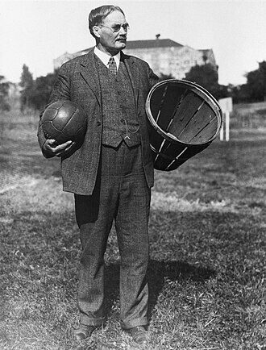

On a December afternoon in 1891, a young Canadian instructor nailed two peach baskets to the balcony rails of a Springfield gymnasium and handed his restless students a new game. He had invented basketball — and he was not yet an American.

James Naismith was born in Canada in 1861 and invented basketball in Massachusetts in 1891, as an immigrant physical-education instructor asked to tame a roomful of bored young men through a long New England winter. He spent most of his life teaching in the United States and became an American citizen only in 1925 — thirty-four years after he had given the country one of its defining games.
The document behind this story
Naismith's original rules of 'Basket Ball' (13 rules) — James Naismith, 1891.
This is where basketball begins — not with a ball, but with a sheet of rules. Naismith typed out thirteen of them and pinned them to the gymnasium wall in December 1891 so his students could learn the game before they played it. The original two-page document still exists; it was bought at a Sotheby's auction in 2010 for $4.3 million and is displayed at the University of Kansas. Rule 1 is the foundation the whole sport still rests on. We quote it from the University of Kansas transcription of the original, which we have not examined in person.
The ball may be thrown in any direction with one or both hands.
“The boys began tackling, kicking and punching in the clinches. They ended up in a free-for-all in the middle of the gym floor. Before I could pull them apart, one boy was knocked out, several of them had black eyes, and one had a dislocated shoulder. It certainly was murder.” James Naismith, describing the very first game, in an interview on the radio programme We the People (WOR), January 1939 — the only known recording of his voice, held by the Library of Congress (item 5).
James Naismith was born on 6 November 1861 in Ramsay Township, in what was then Upper Canada, near the town of Almonte, Ontario. He trained in Canada before crossing into the United States, and by the early 1890s he was a physical instructor at the International YMCA Training School in Springfield, Massachusetts.
In the autumn of 1891 the head of the department, Luther Halsey Gulick, set his instructors a problem: invent an indoor game that could keep a class of young men fit and interested through the winter, when it was too cold and dark to play outside. Two instructors had already given up on the class. Naismith was given two weeks to solve it.
Naismith wanted a game of skill rather than brute force — one where you could not run with the ball or tackle the man who had it. He wrote out thirteen rules, asked a janitor for two boxes, and was handed two peach baskets instead. He fixed them to the balcony railings at either end of the gym, about ten feet up, and posted the rules on the wall so the students could read them.
The first game, in December 1891, was played with a soccer ball and the baskets, nine players a side. It did not go smoothly. But the game spread with astonishing speed through the YMCA network, and the rules were published in 1892. Naismith had also, the same year he invented basketball, devised one of the first pieces of protective football headgear.
In 1898 Naismith earned a medical degree in Denver and then moved to Lawrence, Kansas, where he would spend the rest of his career. At the University of Kansas he served as chapel director and the head of physical education, becoming a full professor in 1906 and retiring only in June 1937. He coached the university's early basketball teams himself — and remains, by a quirk of the sport he founded, the only coach in the program's long history with a losing record.
He watched his invention grow from a gymnasium improvisation into a college sport, a professional one, and, shortly before his death, an Olympic one: basketball was played at the 1936 Berlin Games, and Naismith was there to see it.
For most of his life in the United States, Naismith was a Canadian living and working on an immigrant's footing. He filed for American citizenship near the end of the First World War, and the grant came in 1925 — when he was sixty-three years old and had been teaching in the country for more than three decades. The man who gave America one of its signature games spent most of his American life as a foreign national.
He died in Lawrence, Kansas, on 28 November 1939, a few weeks after a stroke. He had lived to hear his game described on national radio as an American institution.
A few details are worth stating with care. The exact date of the first game is usually given as 21 December 1891, though some accounts say the 15th, and a museum should not pretend to a precision the record does not support. Naismith's citizenship has a firm date — 1925 — that sits strikingly against the story: the inventor of basketball was not a United States citizen when he invented it, nor for a long generation afterward. And the two-page document on which he first set down the rules survives: it was sold at auction in 2010 and is now on public display at the University of Kansas, which lets us quote its first rule from the original wording rather than from memory.
Every fact on this page comes from one of these 7 items. Each links to the institution that holds it and gives that institution’s own rights wording.
The anchor: the Canadian immigrant who invented basketball and did not become a United States citizen until 1925.
Rights, in the institution’s words: Commons record labels this image: Public domain.
reference entry
Biographical source: born 6 November 1861 in Ramsay Township, Upper Canada; physical instructor at the International YMCA Training School, Springfield, Massachusetts, from 1892; invented an early football headgear in 1891; devised basketball in 1891 with the first game played 21 December 1891 (some sources say the 15th); the 13 rules published in 1892; to the University of Kansas in 1898 as chapel director, coach and head of physical education; full professor 1906; retired June 1937; filed for American citizenship near the end of the First World War, 'which would be granted in 1925'; died 28 November 1939 in Lawrence, Kansas.
Rights, in the institution’s words: (not checked; cited only)
reference entry
Corroborating source: Luther Halsey Gulick set the challenge to devise an indoor winter game at the Springfield YMCA Training School in autumn 1891; peach baskets used as goals; Naismith earned a medical degree in 1898 (Gross Medical College, Denver) and chaired physical education at the University of Kansas.
Rights, in the institution’s words: (not checked; cited only)
rules document
The spotlight document: the two-page typed rules Naismith posted on the gymnasium wall in December 1891. The original was bought by David and Suzanne Booth at a Sotheby's auction in 2010 for $4.3 million and is displayed at the University of Kansas. Rule 1 reads: 'The ball may be thrown in any direction with one or both hands.'
Rights, in the institution’s words: (original not examined in person; text transcribed from the University of Kansas digital copy)
radio interview
Source of the first-person quotation describing the chaotic first game, from the only known recording of Naismith's voice, discovered in 2015 and held by the Library of Congress.
Rights, in the institution’s words: (not checked at a rights office; quotation transcribed as published by the Library of Congress)
news article
Source for where the document is held: the original rules are displayed in a glass case in the Rules Gallery of the DeBruce Center at the University of Kansas; David and Suzanne Booth bought them at a 2010 auction for $4.3 million, a figure Sotheby's called a sports-memorabilia record.
Rights, in the institution’s words: (not checked; cited only)
reference entry
Source for two specific facts: Naismith coached basketball at the University of Kansas from 1898 to 1907 with a record of 55-60, described as 'the only coach in the program's history to have a losing record'; and in 1936 the National Association of Basketball Coaches raised funds so he could attend the Berlin Olympics, where basketball made its Olympic debut and he handed out the medals (United States gold, Canada silver, Mexico bronze).
Rights, in the institution’s words: (not checked; cited only)
First-person recordings and expert perspectives held by other museums, archives and media organisations. Each links to the institution that holds it.
Interview
The inventor of basketball interviewed on WOR radio's 'We the People' in 1939, described by the Library of Congress.
Link only: the recording stays with Library of Congress, Recorded Sound Section (WOR-AM collection). View at Library of Congress, Recorded Sound Section (WOR-AM collection)